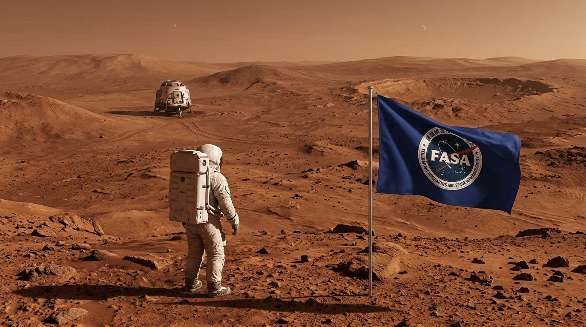

最新 联邦天文台宣布发现新类地天体
联邦天文台今日宣布，一组天文学家通过位于南半球的大型光学望远镜，确认发现一颗此前未被记录的新天体。该天体位于距离太阳系约42光年的恒星区域，初步观测显示其直径约为地球的1.1倍，表面可能存在稀薄大气、冰盖与暗色峡谷结构。
研究团队将这颗临时编号为“凯洛斯‑7b”的天体列入重点观测目录。目前，天文学家尚未确认其是否存在稳定磁场或液态水，但它的轨道位置与恒星辐射强度使其成为未来深空研究的重要目标。联邦天文台表示，后续将启用更高分辨率望远镜，进一步分析其大气成分与地质特征。
最新FASA完成火星载人着陆任务

联邦航空航天管理局（FASA）载人登陆任务取得重大突破，宇航员成功踏上火星荒凉的红色地表，人类正式实现载人登陆火星的历史性壮举。
本次登陆任务历时数月星际航行，登陆团队将开展地表环境勘测、土壤样本采集等多项科研实验，收集火星大气、地质一手数据，为后续长期驻留基地建设积累关键依据。
• 阿瑞斯-V 号火箭已进去发射准备阶段
任务简报: 火星探测器运输任务
• 乌洛波洛斯-X39火箭已进去发射准备阶段
任务简报: 伊特尼塔空间站实验室物资运送
• 伊特尼塔-69火箭已进去发射准备阶段
任务简报: 伊特尼塔空间站实验室物资运送
🌐 航天器任务查询
📊 宇航员信息查询
宇航员档案